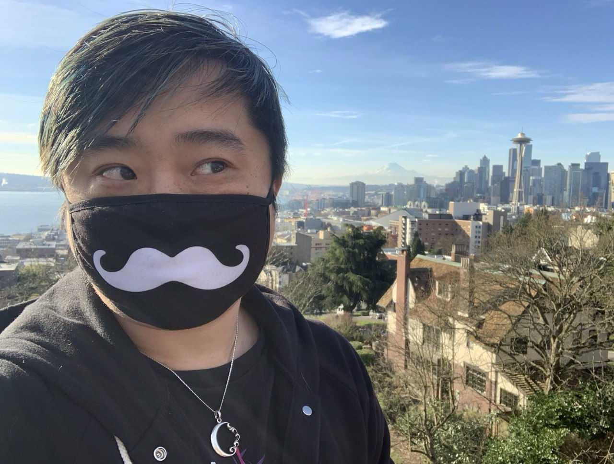

I am a game developer and theater artist currently based in Seattle, WA.
Who I Am

GAME DESIGN: CREATIVE LEADERSHIP
For the past ten years, I've worked in creative leadership and narrative design roles in the game industry, writing original content for beloved IPs and new games alike, shipping titles and features for studios like Riot Games, Wizards of the Coast, ArenaNet, Phoenix Labs, and more.
In 2023, I cofounded Jam & Tea Studios, a seed-funded, remote first game studio. I served as Chief Creative Officer, raising a $3M seed round and overseeing our design disciplines on an immersive RPG codenamed Project Emily. I also oversaw and managed the launch and go to market of our demo game, Retail Mage.
THEATER, FILM, ENTERTAINMENT
In addition to my games work, I am a playwright, actor (stage, film, and VO), improvisor, and teaching artist. I hold an MFA in Acting from California Institute of the Arts and a BA in Theatre and English as a Flinn Scholar from Arizona State University.
Since then, I've worked as a freelance writer and designer for themed entertainment, with clients including Rhetroactive, On Track Themes, and Disney Imagineering. I also worked as a staff writer on a Chinese sitcom, and have continued to write plays and perform in various theater, film, improv, and voiceover projects.